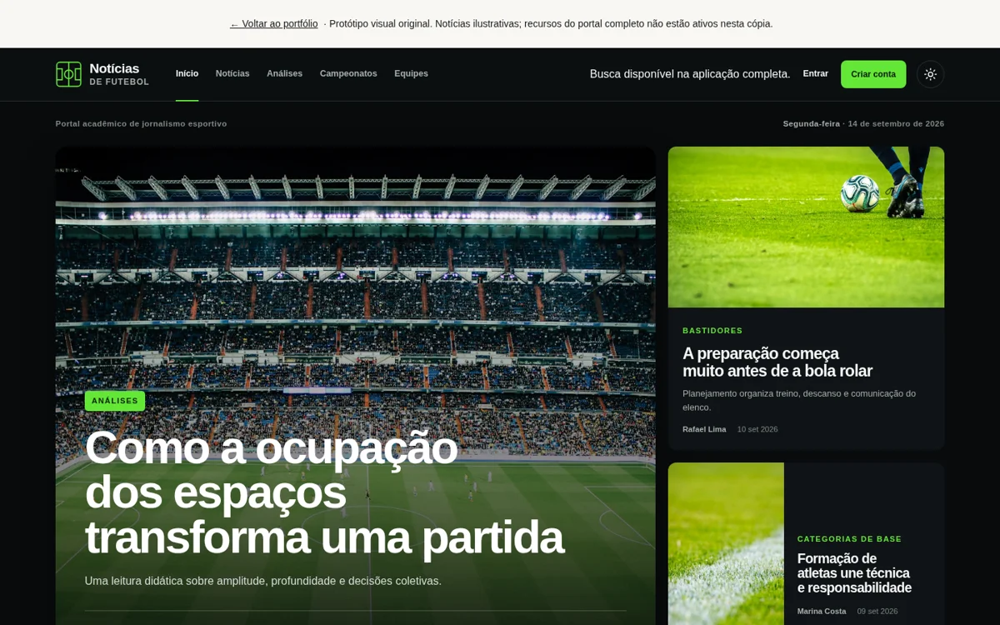

Aranhaverso
Três Homens-Aranha. Uma experiência cinematográfica.
Interfaces, aplicações e experimentos. Cada projeto é uma oportunidade de transformar uma ideia em algo que se pode usar.
Três Homens-Aranha. Uma experiência cinematográfica.
Mais clareza para organizar a rotina.

Futebol em perspectiva. Do conteúdo ao sistema.
Disponível para novos projetos